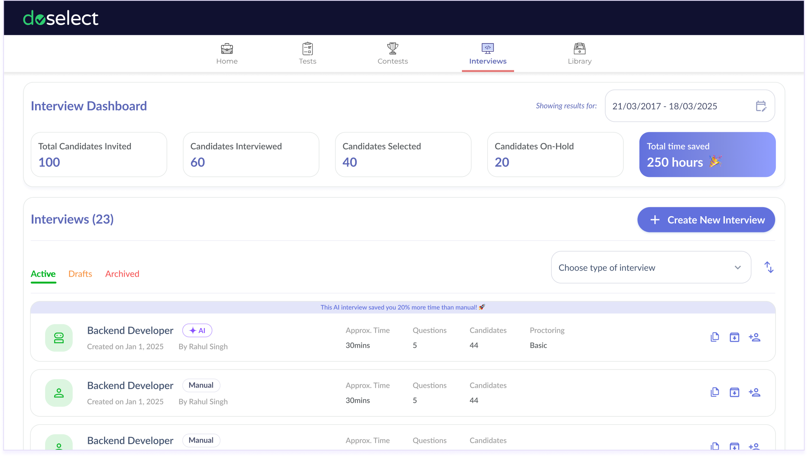
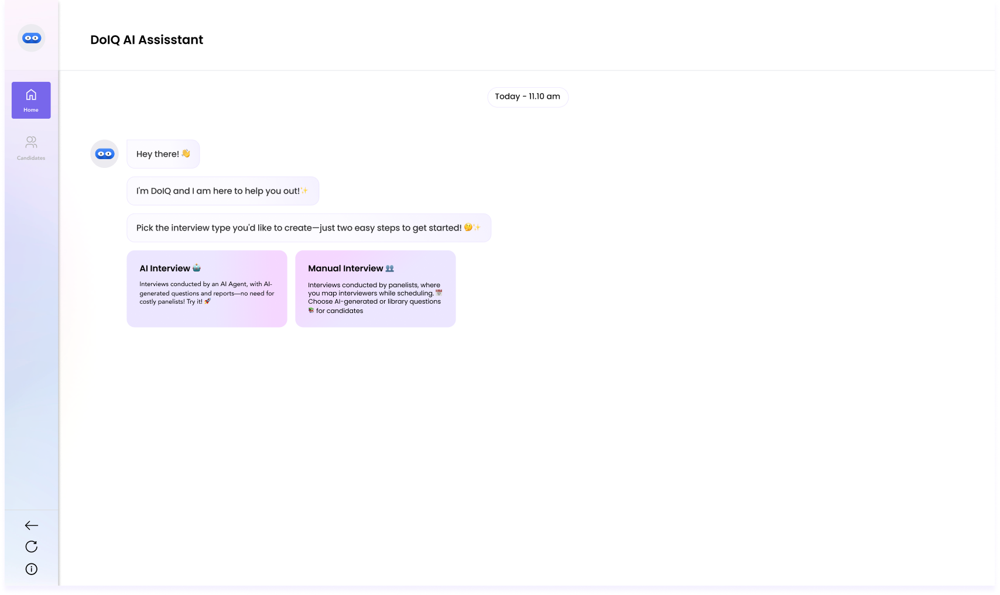
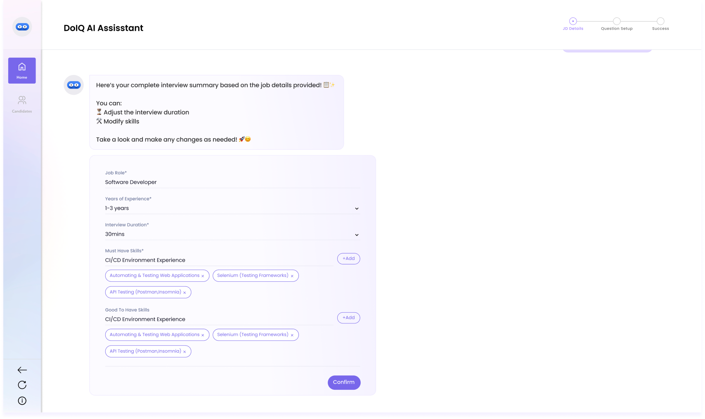
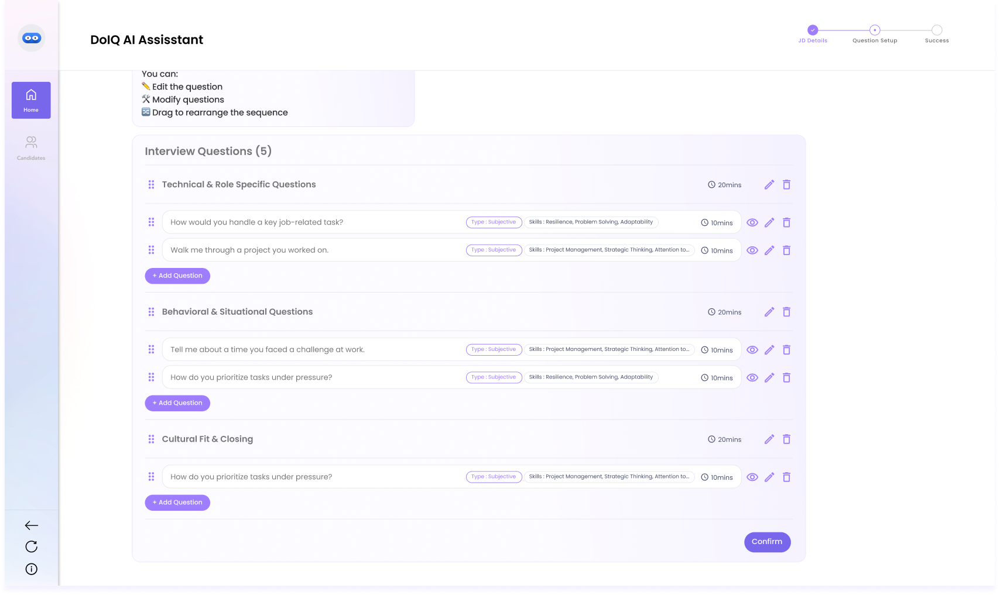
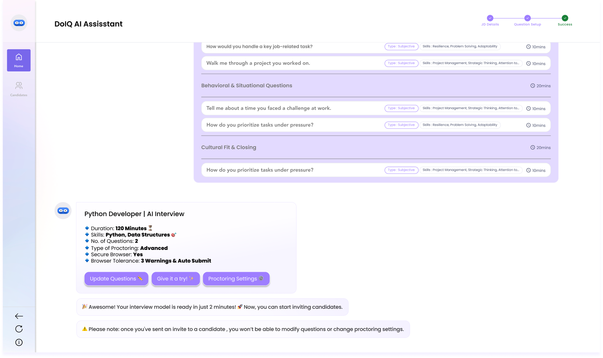
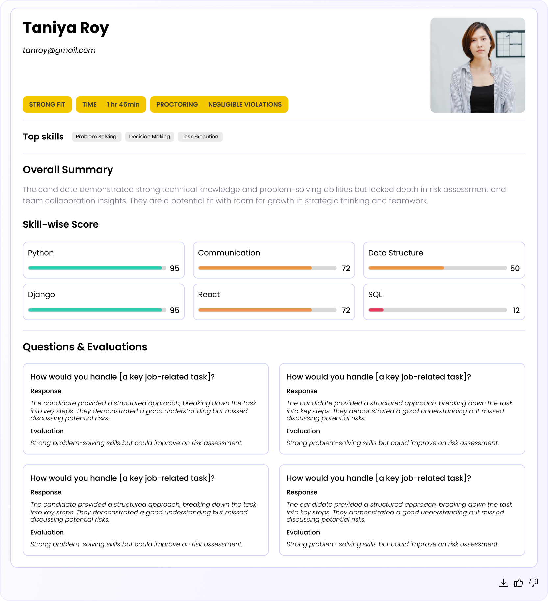

Role
Lead UX Designer
Company
Naukri.com / Doselect
Timeline
2024 · Ongoing
Tools
Figma · Jira
From recruiter interviews and sales feedback, we observed that early interview rounds were increasingly being deprioritized by hiring managers.
In parallel, recruiters mentioned that DoSelect's Manual Interviews were increasingly replaced by Google Meet / MS Teams with plugins, which led to:
Together, recruiters described first-round screening as a high-effort, low-value bottleneck, making it a strong candidate for automation.
Across recruiter interviews and internal usage reviews, three issues consistently surfaced:
high interviewer fatigue.
longer time-to-hire.
inconsistent evaluations.
Manual Interviews reinforced these problems by requiring constant hiring manager involvement, making the system slow, dependency-heavy, and difficult to scale.
Based on recruiter expectations shared during interviews, we defined success as:
Before designing solutions, we aligned on a few key research questions:
A recurring theme across interviews was reducing dependency on hiring managers for question creation (which often delayed the process by 2–3 days) and first-round evaluation, which was often rushed or skipped.
We triangulated insights from multiple sources:
recruiter interviews.
10+ recruiters from active DoSelect customers · 6 recruiters from churned or low-usage accounts
stakeholder discussions.
Product and Engineering teams · Sales feedback from lost or stalled deals
internal data reviews.
Interview setup drop-off points · Average time-to-hire by role type
This helped confirm that patterns were consistent and not anecdotal.
Four insights strongly shaped the product direction:
introductory screening is the highest ROI use case for AI.
hiring managers actively avoid early-stage efforts.
bulk hiring amplifies inefficiencies.
trust is non-negotiable.
Based on recruiter confidence levels, we committed to an MVP-first, scalable approach focused on automating introductory screening, covering roughly 60% of early-stage effort.
Key decisions informed by recruiter interviews:
We chose a conversational chatbot flow over forms because recruiters naturally described hiring needs conversationally and found long forms exhausting during high-volume hiring.
What interviews and testing revealed:
We designed a dashboard to manage AI interviews, aimed at improving efficiency and nudging recruiters toward AI adoption by clearly highlighting its time-saving benefits.
Key features:

We replaced complex form flows with a conversational interface (DoIQ) — guiding recruiters through interview setup step by step. Upload a JD, get a complete interview in seconds.




step {{ stepNo }} / 4{{ stepTitle }}
{{ stepDesc }}
To assist recruiters in faster, more objective decisions, we designed a smart evaluation layer post-interview completion.
Automated Insights: Each candidate response is AI-evaluated with:
Proctoring Layer: Every video is scanned for violations:

A unified view of all candidates invited to an AI interview — their status, scores, and actions — in a single scrollable list.
Early candidate feedback influenced refinements to the AI agent:
Key UX decisions included:
Recruiters later reported fewer candidate complaints post-interview.
Beta outcomes
Recruiter feedback highlighted:
what worked well.
open challenges & learnings.
future opportunities.
Back to portfolio
← All workNext case study
AI Assessment Creation ↗︎